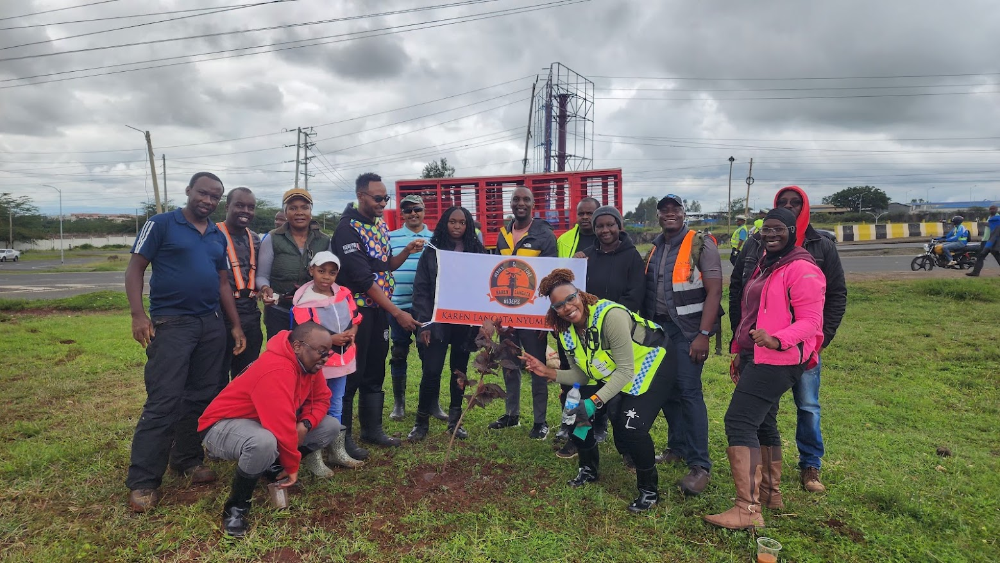

Sidewalk Sprouts: How KLNK Builds Safer Paths for Kids
Two weeks after the Teule Christmas ride, the group returned to Lang'ata Road with another mission: protect the children as they walked to school.
Out on Lang'ata Road, the traffic is aggressive and the sidewalks are not always safe. On that morning, KLNK's sidewalk guard team stepped in to be the reason the kids could cross with confidence.

KLNK riders coordinate roadside safety before the school crossing begins.The difference between safe passage and danger is often about who shows up. We worked with a local PTA and the school staff to identify the most dangerous crossing points, then placed riders at the spots where kids needed the most help.
By 6:45 a.m., everyone had a task. One rider held traffic back. Another guided the children across the busiest gap. A third kept watch for speeding motorcycles and distracted drivers. The team moved like a small village protecting its own.
Within the first ten minutes, they had already stopped five motorbikes and redirected two taxis that were trying to cut through the line. The smiles from the parents and the grateful nods from the teachers made it clear: this was a safety force that mattered.
We shared orange juice with the kids and walked with them until every child was inside the classroom. By 8:00 a.m., the doors opened and the school day began with a deeper sense of calm, knowing the morning was secured.
This is how KLNK lives our values. We do not only ride for ourselves. We ride for the people who share the road with us, especially the children whose futures depend on safe paths to school.